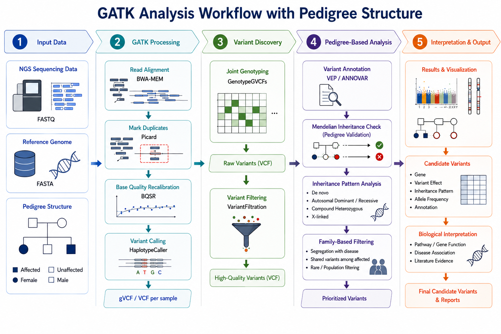

Discovered biologically and clinically relevant genetic variants through automated NGS analysis pipelines, supporting genomic data interpretation and disease-focused research for hospital collaborators. Designed and implemented scalable bioinformatics workflows for variant calling, annotation, quality control, and family-based sequencing analysis, improving the efficiency and reproducibility of genomic studies. Contributed to the development of FamPipe, a comprehensive framework for family-based sequencing data analysis, and SeqSIMLA2, a simulation platform for generating large-scale complex genetic datasets. These tools enabled efficient identification of disease-associated variants, evaluation of analytical strategies, and development of statistical methods for complex genetic data analysis. The resulting methodologies and software frameworks were published in peer-reviewed bioinformatics journals and have been applied to support genetic studies of complex diseases.
